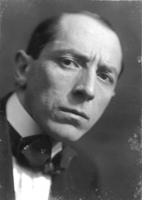
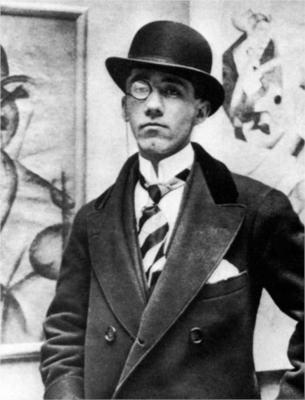
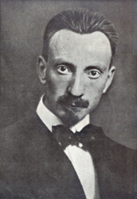

ARTISTAS

Umberto Boccioni
Umberto Boccioni (1882–1916) fue un pintor y escultor italiano, considerado una de las figuras centrales del futurismo y uno de los artistas más influyentes de las vanguardias europeas de comienzos del siglo XX. Nació en Reggio di Calabria, pero pasó gran parte de su juventud en distintas ciudades italianas debido a los traslados laborales de su familia. Finalmente se instaló en Roma, donde estudió arte y entró en contacto con Gino Severini y Giacomo Balla, quienes lo introdujeron en las técnicas divisionistas, influyendo en su primera etapa artística. En 1910, Boccioni firmó el Manifiesto de los Pintores Futuristas, y poco después el Manifiesto Técnico de la Escultura Futurista, convirtiéndose en uno de los principales teóricos del movimiento. Su trabajo buscaba plasmar la velocidad, la energía y la transformación constante de la vida moderna, explorando la fragmentación, la superposición de planos y la representación del movimiento. En pintura, desarrolló escenas dinámicas de ciudades, multitudes y figuras en acción, mientras que en escultura llevó el futurismo a su máxima expresión con su obra maestra, Formas únicas de continuidad en el espacio (1913).
Esta pieza, que representa el avance imparable del cuerpo humano a través del espacio, se convirtió en un ícono universal del futurismo. Además de su labor artística, Boccioni escribió textos fundamentales que sentaron las bases estéticas del futurismo y definieron su dimensión teórica. Su vida se vio truncada prematuramente en 1916, a los 33 años, tras sufrir un accidente al caer de un caballo durante un entrenamiento militar. A pesar de su breve trayectoria, el legado de Boccioni influyó de manera decisiva en la evolución del arte moderno europeo, consolidándose como un referente indispensable en la historia de las vanguardias.

Gino Severini
Gino Severini (1883–1966) fue un pintor y teórico italiano, figura central del movimiento futurista y uno de los artistas más influyentes de la primera mitad del siglo XX. Nació en Cortona y, tras trasladarse a Roma, estudió en la Scuola Tecnica, donde conoció a Giacomo Balla, quien lo introdujo en las técnicas del divisionismo. Esta base marcaría su primera etapa artística. En 1910, Severini firmó el Manifiesto de los Pintores Futuristas, convirtiéndose en uno de los representantes más notables del movimiento. Su obra se enfocó en plasmar el dinamismo, la velocidad y la energía de la vida moderna. Entre sus temas recurrentes se encuentran las bailarinas, los trenes en movimiento, las multitudes urbanas y las escenas de la ciudad industrial, donde exploró la fragmentación y el ritmo del mundo contemporáneo. Severini vivió gran parte de su vida en París, ciudad donde absorbió influencias del cubismo y del ambiente artístico internacional. Esta experiencia le permitió crear un puente entre las vanguardias italianas y francesas, otorgándole un lugar único dentro del panorama moderno.
Tras la Primera Guerra Mundial, su estilo cambió hacia una mayor búsqueda de orden y claridad, adoptando un enfoque más clásico sin abandonar del todo su interés por la teoría y la reflexión estética. Además de pintar, escribió ensayos y textos críticos sobre arte, donde defendió la importancia del análisis visual y el estudio de las formas. Gino Severini falleció en París en 1966. Su legado permanece como un testimonio esencial en la evolución del futurismo y en la conexión entre las vanguardias europeas.
